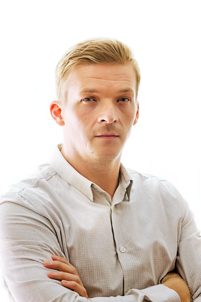

Графический дизайнер
Тел.: + 38 (099) 765-46-30
E-mail: den.niky@gmail.com
SKYPE: Nikitin_sun
Дата рождения: 20.05.1980
Место проживания: г. Харьков
Гражданство: Украинское
Семейное положение: Женат
Дети: 2 (11 и 4 года)
Образование: Полное высшее образование
Учебное заведение: 2003 – 2008: Государственный педагогический университет, г. Бердянск.
Специальность: Педагогика и методика среднего образования. Трудовое обучение
Владение языками:
Русский - родной
Український - вільно
English - Intermediate
Владение програмным обеспечением:
Adobe Illustrator, Photoshop, Indesign, Acrobat Pro – профессионально
Cinema 4d, AfterEffects - базовые навыки
HTML, CSS - основы
Ключевые черты характера:
Позитивный; коммуникабеьный; всегда готов учиться чему-то новому; трудолюбивый; способен работать в «авральном» режиме, но стараюсь часто его не допускать; ответственный и самоорганизованый; удаленно работаю с лета 2013 года.
Июль 2013 – по настоящее время: Фрилансер
Газета «Бердянские ведомости»
дизайн и вёрстка газеты
изготовление рекламной продукции каледари, справочники, путеводители
Меня давно интресует тема вэб-дизайн и разработки сайтов. Но заниматься без менторов очень непродуктивно и достаточно долго. Знаю это не по наслышке, так, как графическому дизайну обучался в основном самостоятельно.
Поэтому увидев объявление о наборе на прохождение курса по WordPress от опытных специалистов, да ещё и БЕСПЛАТНО! я постарался не упустить эту возможность.
Мне нравится ваш подход в обучении, предоставление инструкций и документаций, которые необходимо проработать самому и, как закрепление материала — сдавать контрольные задания.
И я надеюсь вы зачтёте мне это тестовое задание. С огоромным нетерпением жду возможности пройти ваш курс.